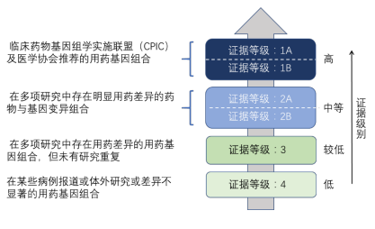

受检者信息
| 姓名：-- | 民族：-- | 送检医院：-- | 送检科室：-- |
| 性别：-- | 年龄：-- | 送检医生：-- | 联系方式：-- |
样本信息
| 样本类型：-- | 采样日期：-- | 接受日期：-- | 样本编号：-- |
临床信息
| 临床诊断： | -- |
| 既往治疗： | -- |
| 家族史： | -- |
| 补充说明： | -- |
检测信息
1.检测项目：用药指导基因多态性检测
2.检测内容：精神类 用药相关基因的24个基因
3.检测目的：指导精神类药物用药
检测结果
本受检者精神类用药检测基于药物基因组学进行，仅作为您的主治医生选择治疗方案时的参考意见。 综合分析检测结果为，
1、受检者对常见精神类药物敏感性及毒副作用及剂量请参考下表：
| 药物敏感性及毒副作用参考 | ||||||
| 药物 | 作用类别 | 基因 | 突变位点 | 证据等级 | 基因型 | 结果提示 |
2.受检者的基因及其检测结果
| 基因 | 突变位点 | 证据等级 | 基因型 | 临床意义 |
说明：
根据 pharmGKB 推荐临床用药证据等级参考如下：
Level 的划分：依据 PharmGKB 网站 http://www.pharmgkb.org/page/clinAnnLevels
Level 1A：注释基于被医学会认可的指南或经某些重大卫生系统的认可；
Level 1B：注释基于多项有统计显著的研究；
Level 2A：注释基于多项重复研究，故药效关系很有可能是有意义的；
Level 2B：注释基于多项重复研究，但某些研究可能无统计显著性或样本数量少；
Level 3：注释仅基于 1 项有显著差异的研究（未重复）或多项研究但缺乏明显药效关联性；
免责声明：
1.本检测报告只对此样本的本次检测结果负责。
2.本检测报告仅为受检者的治疗提供临床参考。具体医学问题，请咨询相关执业医师。
3.对检测结果如有疑义，请收到结果后的 7 个工作日内与我们联系，咨询电话：027-87206915。
| 操作者 | 分析人 | 审核人 | 报告日期 |
| 卢飞 | 肖欣 | 谭灏文 | 2019- |
精神科药物基因多态性检测解读
| 序号 | 检测基因 | 解读 |
| 1 | OPRM1 | OPRM1编码编码人体三种阿片受体之一的μ阿片受体。该受体是内源性阿片肽和阿片类镇痛剂的主要靶点，当阿片类药物（芬太尼，吗啡，丁丙诺啡和曲马多等）与受体结合时，相互作用会触发神经元内部和之间的一系列化学变化，从而产生愉悦感和缓解疼痛的感觉。研究表明rs1799971的多态性能影响μ阿片受体的功能，具有AA型的个体疼痛缓解程度更高（PMID：17898703 ），另外与AG和GG型相比，具有AA型的个体可能需要减小剂量（PMID：19605407） |
| 2 | ABCB1 | ABCB1基因编码的膜相关蛋白是ATP结合盒（ABC）转运蛋白超家族的成员。ABC蛋白质通过细胞外和细胞内膜运输各种分子。该基因编码的蛋白是一个ATP依赖型广谱底物外源化合物外排泵。研究表明rs1045642能够影响ABC转运蛋白对于阿片类药物（芬太尼，吗啡，羟考酮，曲马多，美沙酮）的运输能力，与具有GG或AG基因的患者相比，具有AA型的个体服用阿片类药物后疼痛缓解程度高（PMID：17898703），可能需要减少剂量（PMID：19514130）。另外在rs1045642的多态性对阿戈美拉汀影响的研究中发现，与AA或AG基因型的患者相比，rs1045642 GG型抑郁症患者对阿戈美拉汀的反应可能增加（PMID：26664259 ）。在rs1128503的多态性和丙泊酚的研究中发现，与具有AA或AG基因型的患者相比，具有GG基因型且正在进行手术的患者对丙泊酚的反应增加（PMID：29755652）。 |
| 3 | COMT | COMT基因编码儿茶酚-o-甲基转移酶，在大脑中能够分解化学信使，这些化学信使在神经细胞中传递。儿茶酚- o -甲基转移酶在大脑前额皮质的区域中起重要作用，该区域能够组织和协调来自大脑其他部分的信息。COMT多态性与神经精神疾病的关联被认为与儿茶酚胺神经递质的代谢有关，研究表明rs4680多态性与阿片类药物（美沙酮，吗啡，羟考酮，瑞芬太尼和曲马多）治疗疼痛效果与剂量有关，与具有AG或GG基因型的患者相比，具有AA型的患者的药物敏感性高(PMID：25155931），可能需要更低的剂量(PMID：17156920）。另外在研究恩他卡朋治疗帕金森中发现，与rs4680 AG和AA基因相比， GG型帕金森患者对恩他卡朋的敏感性增加（PMID：21280081）。 |
| 4 | CYP2B6 | CYP2B6是重要药物基因的细胞色素P450家族的成员，占总肝脏CYP含量的约2-10％，CYP2B6也在脑中表达，这可能是CNS作用药物代谢和药物治疗的神经副作用的重要因素。研究表明rs3745274的多态性影响使用美沙酮治疗海洛因成瘾的剂量，与具有GG或GT基因型的患者相比，使用美沙酮治疗海洛因成瘾的TT基因型患者可能需要减少药物剂量（PMID：21902500）。另外在对丙泊酚的麻醉剂量研究中发现，rs3745274 GG型患者相比TT或GT型患者可能需要增加剂量（PMID：26141406）。 |
| 5 | ADRB2 | ADRB2编码β-2-肾上腺素能受体，这是一种G蛋白偶联的肾上腺素能受体，在调节心脏，肺，血管，内分泌和中枢神经系统中发挥重要作用。研究表明rs1042718的多态性与丙泊酚的毒副作用相关，与CC基因型相比，AA或AC基因型接受神经外科手术后可能经历更严重的低血压（PMID：26771271 ） |
| 6 | CYP2D6 | CYP2D6编码细胞色素P450 2D6的酶，主要表达于肝脏，也表达于中枢神经系统中，参与25%临床药物的代谢和清除（PMID: 18001838），CYP2D6多态性对许多不同的治疗领域都有影响，多种临床使用的药物被CYP2D6代谢，包括精神类药物。研究表明相比于中间代谢型和弱代谢型，针对可待因，羟考酮和曲马多，正常代谢型CYP2D6*1/*1的代谢增加，药物敏感性增加（PMID：17517247 ，PMID：19281600，PMID：8988065）。针对可待因，羟考酮，曲马多，阿米替林，多塞平，氯米帕明，马普替林，氟伏沙明，文拉法辛和托莫西汀的毒副作用的研究中表明，正常代谢型CYP2D6*1/*1可能降低副作用风险（PMID：21743374，PMID：21735164，PMID：16631290，PMID：15590749，PMID：17721180，PMID：18070221，PMID：23545896，PMID：20691935），针对丙米嗪，马普替林，文拉法辛和托莫西汀的剂量研究中发现，正常代谢型CYP2D6*1/*1可能增加剂量（PMID：2293406，PMID：18070221，PMID：17803873 ，PMID：17698328） |
| 7 | CYP2C9 | CYP2C9编码Ⅰ期药物代谢细胞色素P450酶，在异生物和内生物的分解中起重要作用。由CYP2C9的遗传变异引起的酶功能活性的变化在不良反应（ADR）的发病机理中起主要作用。具有低酶活性的患者存在ADR的风险，特别是对于具有窄治疗窗的CYP2C9底物，包括苯妥英（PMID：14511900），在用苯妥英治疗癫痫的研究中，相对于中间代谢型和弱代谢型，正常代谢型*1/*1的患者的代谢增加，药物血浆浓度降低，毒性和药物不良反应可能减少（PMID：20390258 ，PMID：15024534 ，PMID：10510154）。 |
| 8 | SCN1A | SCN1A编码电压门控钠离子通道α1亚单位蛋白，对于肌细胞和神经元中动作电位的产生和传播是必需的。该基因的变异与伴有热性惊厥和癫痫性脑病的全身性癫痫相关。选择性剪接导致多种转录物变体。在用苯妥英治疗癫痫的研究中，与具有CT或TT基因型的患者相比，rs3812718 CC基因型的患者可能需要更低的剂量（PMID：15805193）。 |
| 9 | UGT1A4 | UGT1A4基因编码葡糖醛酸化途径的酶，这是一种II期代谢过程，将小的亲脂性分子转化为水溶性的可排泄的代谢物。UGT1A4酶介导精神药物的代谢，包括一些三环类抗抑郁药，抗精神病药物和情绪稳定剂。在用拉莫三嗪治疗癫痫的研究中，与TT基因相比，rs2011425 GG或GT基因型的患者可能有降低的拉莫三嗪的血清浓度，以及对拉莫三嗪更差的反应（PMID：23263737，PMID：24820767）。 |
| 10 | DRD3 | DRD3编码多巴胺受体中的D3亚型。D3亚型受体的活性由抑制腺苷酸环化酶的G蛋白介导。位于大脑的边缘区域，与认知，情绪和内分泌功能相关。研究发现与具有CT或TT型的患者相比，用普拉克索治疗的携带rs6280 CC型帕金森病的患者药物敏感性降低（PMID：19396436）。在度洛西汀对焦虑症的治疗的研究，对DRD3的其他SNP位点进行了研究，如rs963468，与具有AG或AA基因型的患者相比，具有GG基因型的患者对度洛西汀的敏感性可能降低（PMID：22249355）。rs167770的多态性研究中，与具有AA或GG基因型的患者相比，具有AG基因型患者对度洛西汀的敏感性可能降低。rs324023的多态性研究中，与具有CC或TT基因型的患者相比，具有CT基因型的患者对度洛西汀的敏感性可能降低。rs324026的多态性研究中，与具有CC或CT基因型的患者相比，具有TT基因型=者可能对度洛西汀的敏感性增加。 |
| 11 | SLC22A1 | SLC22A1编码有机阳离子转运蛋白1（OCT1），在血液中介导有机阳离子进入上皮细胞。研究发现，rs622342的多态性影响司来吉兰对帕金森病治疗的效果，与具有AC或CC基因型的患者相比，具有AA基因型患者可能需要减少剂量的抗帕金森病药物，并且可能具有降低的死亡风险（PMID：20680652）。 |
| 12 | CYP1A2 | CYP1A2编码细胞色素P450（CYP）1A2酶，是药物代谢基因家族的诱导成员，对咖啡因和抗精神病药物的代谢很重要。在用抗精神病药物（氯丙嗪，氟奋乃静，硫利达嗪或三氟拉嗪）治疗精神分裂症的研究中发现，相比于CC或AC基因型的患者，rs762551 AA基因的QT间期可能会减少（PMID：17611010）。 |
| 13 | EPM2A | EPM2A编码双特异性磷酸酶，参与糖原代谢的调节，在整个身体的细胞中都有活性，但它在大脑神经细胞（神经元）的存活中起着关键作用。研究发现rs1415744的多态性影响精神分裂症的治疗效果，与具有CT和TT基因型的患者相比，rs1415744 CC基因型的精神分裂症患者对氯丙嗪或三氟拉嗪的敏感性可能增加（PMID：27092952）。 |
| 14 | DRD2 | DRD2编码多巴胺D2受体，是5种不同的多巴胺受体之一. DRD2变异不仅与疾病易感性有关，而且与几种抗精神病药物的药物遗传学有关（PMID: 20194480）。在使用氯丙嗪对精神病患者治疗的研究中，与具有del / del基因型的患者相比，具有rs1799732 G / del基因型患者在用抗精神病药治疗时可能具有增加的副作用风险，或者与具有GG基因型的患者相比有降低的风险（PMID：18086475，PMID：20664489 ，PMID：21749219）。在对抗精神病药氯氮平，奥氮平和利培酮的研究中发现，rs1800497 AA基因型的患者在使用抗精神病药物治疗期间可能具有增加的副作用风险，包括高催乳素血症和体重增加等（PMID：20714340 ，PMID：19339912）。另外在使用利培酮治疗精神分裂症的研究中，rs1799978 CT型或者TT型的患者的药物敏感性可能增加（PMID：17105675，PMID：18855532）。 |
| 15 | MC4R | MC4R编码的蛋白是膜结合受体和黑皮质素手提家族的成员，编码的蛋白质与促肾上腺皮质激素和MSH激素相互作用，并由G蛋白介导。患有精神分裂症，分裂情感障碍或自闭症的患者服用氟哌啶醇、齐拉西酮、喹硫平、氯氮平、奥氮平、氨磺必利、舒托必利、利培酮或帕利哌酮，rs489693 AA基因型的患者比AC和CC型更有可能体重增加和高甘油三酯血症的可能性（PMID：22566560，PMID：22566560）。 |
| 16 | HTR2C | HTR2C编码七跨膜G蛋白偶联受体，该基因位于X染色体上，雄性只有一个等位基因。用于5-羟色胺（血清素）的G蛋白偶联受体。还可作为各种药物和精神活性物质的受体。配体结合导致构象变化，其通过鸟嘌呤核苷酸结合蛋白（G蛋白）触发信号传导并调节下游效应子的活性。rs1414334多态性改变了HTR2C蛋白的活性，研究发现与具有CG和CC基因型的患者相比，具有GG基因型的女性患者可能具有降低的代谢综合征风险。与具有C基因型的患者相比，具有G基因型的男性患者可能具有降低的代谢综合征发生风险（PMID：20680028，PMID27441116）。 |
| 17 | CYP2C19 | CYP2C19编码细胞色素P450（CYP）2C19酶，是参与药物肝脏代谢的主要酶，CYP2C19参与叔胺三环类抗抑郁药（TCAS）的代谢,包括丙咪嗪，阿米替林，曲米帕明和氯米帕明等，一些选择性5-羟色胺再摄取抑制剂如西酞普兰，舍曲林，氟西汀和文拉法辛，也是CYP2C19酶的底物。除此之外血小板聚集抑制剂等药物也受CYP2C19酶影响，如地西泮和苯妥英（PMID: 2495208，PMID: 19855097）。在用地西泮治疗术前焦虑的研究中，具有CYP2C19*1/*1正常代谢的患者可能代谢率高，并可能更快的从麻醉中清醒（PMID：16338280）。在对阿米替林给药研究中，CYP2C19*1/*1正常代谢型代谢增加（阿米替林血药浓度降低，去甲肾上腺素血浆浓度增加），推测其毒性可能减少（PMID：15205367，PMID：12172336）。另外CYP2C19能够影响艾司西酞普兰，舍曲林和西酞普兰的药代动力学，CYP2C19*1/*1正常代谢型能够增加艾司西酞普兰，舍曲林和西酞普兰的药物清除率（PMID：11452243 PMID：24257813 PMID：8835706），CPIC指南上推荐CPY2C19正常代谢和中等代谢者按照正常推荐剂量服用，弱代谢者需减量或使用替代药物。 |
| 18 | UGT2B15 | UGT2B15编码葡糖醛酸基转移酶2B15，介导多种药物底物的代谢，包括苯二氮卓类药物（劳拉西泮和奥沙西泮等），苯二氮卓类药物（BZDs）用作镇静剂和抗焦虑药物，UGT2B15 * 2（rs1902023）被发现是劳拉西泮的药代动力学和药效学的个体间变异性的主要决定因素(PMID: 15961980 )。与具有AA基因型的受试者相比，rs1902023 CC基因型的受试者可能具有增加的奥沙西泮或劳拉西泮的清除率（PMID：19916996，PMID：15961980），推测药物敏感性可能降低 |
| 19 | ADRA2A | ADRA2A编码肾上腺素受体α2A，与它同源的亚型还有α2B和α2C。这些受体在调节交感神经和中枢神经系统中肾上腺素能神经元的神经递质释放中具有关键作用。其基因的多态性对麻醉剂如右美托咪啶的镇定效果有影响，研究表明相比于GG或GC型，rs1800544 CC型患者对右美托咪啶更具有敏感性（PMID：21104443）。 |
| 20 | HTR1A | HTR1A编码血清素的G蛋白偶联受体，还可作为精神活性物质的受体，在大脑中调节多巴胺和血清素的浓度，从而影响神经活动，情绪和行为。rs6295（HTR1A）位于启动子区，是功能位点，影响患者对帕罗西汀的药物敏感性，与CG或CC基因型相比，用帕罗西汀治疗的具有恐慌症的GG型患者在治疗4周时可能会有更好的反应（PMID：21688171）。 |
| 21 | FKBP5 | FKBP5编码脯氨酰异构酶5，是糖皮质激素受体（GR）辅助蛋白之一，其过表达可减少GR的核转录和激素结合律，从而调节HPA轴。大约50%的抑郁症患者存在HPA轴功能亢进和糖皮质激素抵抗等神经内分泌改变。应用抗抑郁可以逆转这种情况。研究发现在抗抑郁药（帕罗西汀，氟西汀，米氮平和文法拉辛）治疗中，rs4713916 AA型对抗抑郁药更为敏感(PMID：20709156，PMID：15565110）。 |
| 22 | ADORA2A | ADORA2A编码腺苷A2a受体。咖啡因是一种腺苷A（1）和A(2A)受体拮抗剂，被认为是一种精神兴奋剂，也能导致焦虑。ADORA2A基因变体（rs5751876）与咖啡因引起的焦虑之间存在关联。与具有CT或TT基因型的患者相比，具有CC基因型的患者在暴露于咖啡因时可能焦虑感增加（PMID：18305461）。 |
| 23 | CHRNA7 | CHRNA7编码胆碱受体烟碱α7亚基，在中枢神经中组成同型五聚体，与乙酰胆碱结合后激活，进行胞吐作用并激活转录。乙酰胆碱酯酶负责将乙酰胆碱降解为胆碱和乙酸盐，胆碱和乙酸盐都没有显着的效力。许多研究报道，AD病人脑组织内的胆碱受体含量降低，其含量下降可能与阿尔兹海默症相关。临床上使用胆碱酯酶抑制剂（如多奈哌齐和加兰他敏）治疗阿尔兹海默病中发现，rs6494223（CHRNA7）TT基因型对胆碱酯酶抑制剂治疗更为敏感（PMID：24951635）。 |
| 24 | CHAT | CHAT编码催化神经递质乙酰胆碱生物合成的酶，是反映胆碱能神经功能的标志性酶，该基因的多态性与阿尔兹海默症以及轻度认知障碍有关。多奈哌齐和加兰他敏作为乙酰胆碱酯酶抑制剂，在对阿尔兹海默症治疗中发现，CHAT基因的多态性影响药物敏感性，rs3793790 AA型患者对多奈哌齐和加兰他敏的药物敏感性降低（PMID：25730470），对于rs2177370的多态性研究中发现，具有AA基因型的患者对多奈哌齐和加兰他敏的药物敏感性增加（PMID：25730470）。 |
附录
本次检测的基因列表
| OPRM1 | COMT | ABCB1 | CYP2B6 | ADRB2 | CYP2D6 |
| CYP2C9 | SCN1A | UGT1A4 | DRD3 | SLC22A1 | CYP1A2 |
| EPM2A | DRD2 | MC4R | HTR2C | CYP2C19 | UGT2B15 |
| ADRA2A | HTR1A | FKBP5 | ADORA2A | CHRNA7 | CHAT |
检测信息
1.检测项目：用药指导基因多态性检测
2.检测内容：心血管用药相关基因的36基因
3.检测目的：指导心血管类药物 用药
检测结果
本受检者心血管用药检测基于药物基因组学进行，仅作为您的主治医生选择治疗方案时的参考意见。 综合分析检测结果为，
1、受检者对常见心血管药物敏感性及毒副作用及剂量请参考下表：
| 药物敏感性及毒副作用参考 | ||||||
| 药物 | 作用类别 | 基因 | 突变位点 | 证据等级 | 基因型 | 结果提示 |
2.受检者的基因及其检测结果
| 基因 | 突变位点 | 证据等级 | 基因型 | 临床意义 |
说明：
根据 pharmGKB 推荐临床用药证据等级参考如下：
Level 的划分：依据 PharmGKB 网站 http://www.pharmgkb.org/page/clinAnnLevels
Level 1A：注释基于被医学会认可的指南或经某些重大卫生系统的认可；
Level 1B：注释基于多项有统计显著的研究；
Level 2A：注释基于多项重复研究，故药效关系很有可能是有意义的；
Level 2B：注释基于多项重复研究，但某些研究可能无统计显著性或样本数量少；
Level 3：注释仅基于 1 项有显著差异的研究（未重复）或多项研究但缺乏明显药效关联性；
免责声明：
1.本检测报告只对此样本的本次检测结果负责。
2.本检测报告仅为受检者的治疗提供临床参考。具体医学问题，请咨询相关执业医师。
3.对检测结果如有疑义，请收到结果后的 7 个工作日内与我们联系，咨询电话：027-87206915。
| 操作者 | 分析人 | 审核人 | 报告日期 |
| 卢飞 | 肖欣 | 谭灏文 | 2019- |
心血管科药物基因多态性检测解读
| 序号 | 检测基因 | 解读 |
| 1 | C11orf65 | rs11212617位于ATM基因旁的染色体11开放阅读框65中，ATM基因编码的蛋白质属于PI3 / PI4-激酶家族。这种蛋白质是一种重要的细胞周期检查点激酶，可以磷酸化；因此，它作为多种下游蛋白质的调节剂起作用。研究发现，rs11212617的多态性与2型糖尿病中的二甲双胍治疗反映显著相关(PMID：22453232, PMID：21186350）。与AA型的患者相比，CC型患者对二甲双呱的药物敏感性较高。 |
| 2 | KCNJ11 | KCNJ11基因编码ATP敏感性钾通道（K ATP）的Kir6.2亚基。磺脲类药物（格列苯脲，格列吡嗪，格列美脲，格列喹酮和格列齐特等）的主要作用靶标是K ATP通道。在胰腺中，当细胞内葡萄糖水平增加时，K ATP通道关闭。K+外排的停止使β细胞膜去极化，其激活电压门控钙通道并促进胰岛素分泌。磺酰脲类药物通过抑制K ATP通道发挥其降血糖作用。因此，KCNJ11变异可能影响2型糖尿病患者磺脲类药物治疗的结果（PMID: 16595597)。研究表明当使用磺脲类药物治疗糖尿病时，rs5219 CC基因型的患者的药物敏感性较高（PMID: 2238588）。 |
| 3 | ADIPOQ | ADIPOQ基因编码脂联素，在成人脂肪细胞中广泛表达，具有胰岛素增敏、抗动脉粥样硬化以及抗炎等作用。吡格列酮是一种胰岛素增敏剂能够增加脂联素的表达及其在血浆中的浓度，增加把组织对胰岛素的敏感性，在治疗Ⅱ型糖尿病中的胰岛素抵抗中发挥了重要作用。因此ADIPOQ基因的多态性会影响吡格列酮的作用效果。研究表明rs2241766 TT基因型的患者对吡格列酮的药物敏感性较低（PMID：25405601）。 |
| 4 | CYP2C8 | CYP2C8基因编码细胞色素P450 2C8的酶，是一种I期代谢酶，负责5%的Ⅰ期肝脏代谢药物的生物转化。罗格列酮是过氧化物酶体增殖物激活受体激动剂，用于治疗2型糖尿病。其主要的代谢酶是CYP2C8。研究表明rs10509681 TT基因型对罗格列酮的代谢减小，较大的HbA1c，水肿风险增加（PMID：23426382）。 |
| 5 | GP1BA | GP1BA基因编码糖蛋白1b血小板亚基α，与糖蛋白1b血小板亚基β形成糖蛋白1b，在血液凝固中起作用，GPIbα对于血小板表面的复合物的组装是必需的。它能与VWF因子相互作用以触发血液凝固的复合物。GPIbα还与其他凝血蛋白相互作用，以辅助凝血过程的其他步骤。阿司匹林是一种抗血小板凝集的药。研究表明rs6065 CC基因具有增加的阿司匹林抵抗风险（PMID：17245331），药物敏感性较低。 |
| 6 | PTGS1 | PTGS1基因编码磷脂酶A2（PLA2），PLA2活化后释放花生四烯酸（AA）并催化合成TBXA2，而阿司匹林能够不可逆的组织AA被催化合成TBXA2的过程，从而阻止了血小板聚集。研究发现PTGS1基因多态性位点rs10306114能够影响对阿司匹林的药物敏感性，与具有AG或者GG基因型的患者相比，AA基因型患者可能具有降低对阿司匹林无应答的风险，药物敏感性较高（PMID：16493486）。 |
| 7 | CYP2C19 | CYP2C19基因编码细胞色素P450 2C19酶，参与大量临床相关药物的代谢，包括抗血小板药阿司匹林和氯吡格雷。在对阿司匹林的研究中发现正常代谢者*1/*1中风发生率降低，表明其疗效较好（PMID：26019129）。氯吡格雷是一种噻吩并吡啶衍生物，与血小板P2RY12嘌呤能受体特异性且不可逆地结合，抑制ADP介导的血小板活化和聚集（PMID: 11127873，PMID: 15199474）。对氯吡格雷的毒副作用研究中发现，CY2C19正常代谢者*1/*1的氯吡格雷代谢增加，治疗后继发性心血管事件的风险可能降低（PMID：24262617，PMID：24262617） |
| 8 | CYP2C9 | CYP2C9基因编码Ⅰ期药物代谢细胞色素P450酶，在异生物和内生物的分解中起重要作用。由CYP2C9的遗传变异引起的酶功能活性的变化在不良反应（ADR）的发病机理中起主要作用。具有低酶活性的患者存在ADR的风险，特别是对于具有窄治疗窗的CYP2C9底物，例如华法林，研究发现相对于中间代谢者或弱代谢者，具有*1/*1正常代谢的患者，用华法林治疗的过度抗凝风险可能会降低，表明其毒副风险可能降低（PMID：19874474），可能需要更高剂量的华法林（PMID：29298995）。 |
| 9 | VKORC1 | VKORC1基因编码维生素K还氧化物还原酶（VKOR），维生素K循环中的关键酶和华法林的药理学靶点，华法林通过抑制VKORC1基因编码的VKOR的催化作用而发挥抗凝作用。VKOR能催化生成还原型维生素K，后者辅助刺激CGCX，导致血液凝固的发生。VKORC1的遗传变异已被证明华法林剂量和反应的重要遗传因素。VKORC1的多态性位点（c.-1639G>A, rs9923231)在华法林的药物敏感性和剂量中显著相关，其他SNP位点不能完全准确的预测华法林的剂量。患者携带1个或2个-1639A比纯野生型–1639G/G需要减少华法林的剂量（PMID：25084205）。 |
| 10 | MTRR | MTRR基因编码甲硫氨酸合成酶还原酶，参与叶酸代谢，为HCY代谢途径主要的调节酶，通过保持维生素B12的足够活性催化还原MTR，使HCY再甲基化生成蛋氨酸。MTRR A66G（rs1801394）多态性导致酶活降低，以及HCY再甲基化程度降低，可能导致高HCY血症。在使用叶酸治疗偏头痛的研究中发现，相对于AA或AG基因型，rs1801394 GG型的患者的药物敏感性较差（PMID：22926161）。 |
| 11 | MTHFR | MTHFR基因编码亚甲基四氢叶酸还原酶，是叶酸-甲硫氨酸代谢中的一个关键酶，催化5,10-亚甲基四氢叶酸还原成5-甲基四氢叶酸，后者为HCY提供一碳单位并使其甲基化而生成甲硫氨酸。MTHFR酶活性降低会导致HCY在血管内累积，HCY的毒性引发血管内皮细胞损伤，导致血栓的发生。在使用叶酸治疗偏头痛的研究中发现，相对于AG或GG基因型，rs1801133 AA基因型的患者降低叶酸代谢，表明药物敏感性可能较差（PMID：22926161）。 |
| 12 | ABCB1 | ABCB1基因编码的膜相关蛋白也称为多药耐药蛋白1（MDRP1）,是ATP结合盒（ABC）转运蛋白超家族的成员，ABC蛋白通过细胞外和细胞内膜运输各种分子。该基因编码的蛋白是一个ATP依耐型广谱底物外源化合物外排泵。辛伐他汀也是ABCB1蛋白的底物之一，可抑制HMG-CoA(羟甲基戊二酸单酰辅酶A)还原酶活性，降低血清总胆固醇和低密度脂蛋白胆固醇的水平。在高胆固醇血证的患者中使用辛伐他汀发现，rs2032582 CC型的患者的总胆固醇的降低水平较低，表明相对于AC，AA，TT或AT基因型，CC基因型患者的药物敏感性可能较低（PMID：16321621）。 |
| 13 | NOS1AP | NOS1AP基因编码心脏一氧化氮合酶受体蛋白，该蛋白通过调节钾离子通道、钠离子通道、钙离子通道参与心肌复极化过程（PMID: 19822806），胺碘酮能够抑制多种心肌细胞膜钾通道，对钠通道和钙通道亦有抑制作用，是一种广谱抗心律失常的药物，同时也是最易导致QT间期延长的药物之一。在使用胺碘酮治疗时，rs10919035 CC基因型的患者可能具有降低的药物诱导的心律失常和QT延长的风险，在该研究中也发现其另外的一个多态性位点rs10800397与心律失常和QT延长的风险相关（PMID：22682551）。 |
| 14 | KCNE1 | KCNE1基因编码钾电压门控通道亚家族E调节亚基1，KCNE家族成员的基因变异可能会引起缓慢型延迟整流钾电流（IKs）与快速型延迟整流钾电流（IKr）电流密度或通道动力学特征改变，从而触发或抑制心房颤动的发生。胺碘酮能够抑制多种心肌细胞膜钾通道，对钠通道和钙通道亦有抑制作用，是一种广谱抗心律失常的药物，同时也是最易导致QT间期延长的药物之一。索他洛尔也是一种钾通道抑制剂。在使用胺碘酮或索他洛尔治疗时，rs1805128 TT基因型可能有增加的药物诱发的尖端扭转型室性心动过速的风险（PMID：22100668）。 |
| 15 | CYP2D6 | CYP2D6基因编码细胞色素P450 2D6的酶，主要表达于肝脏，也表达于中枢神经系统中，参与25%临床药物的代谢和清除（PMID: 18001838），CYP2D6多态性对许多不同的治疗领域都有影响，多种临床使用的药物被CYP2D6代谢，包括抗心律失常药（如氟卡尼，美西律，普罗帕酮等）和β-受体阻滞剂（如美托洛尔等）。在使用氟卡尼治疗心律失常的研究中发现，相比于正常代谢型，CYP2D6中间代谢者或弱代谢者可能具有较低的氟卡尼清除率，可能需要较低剂量的氟卡尼（PMID：22941032，PMID：16944116）。另外CYP2D6的多态性也与普罗帕酮的毒性相关，相对中间代谢型或弱代谢型，正常代谢型的患者普罗帕酮的代谢可能增加，可能降低副作用的风险（PMID：12421483）。 |
| 16 | ACE | ACE基因编码血管紧张素转换酶，是肾素血管紧张素系统（RAS）的关键酶，能催化血管紧张素Ⅱ的生成。血管紧张素Ⅱ使血管变窄，导致血压升高。同时刺激醛固酮激素产生，引发肾脏对水和盐吸收，增加血压。ACE酶是抗高血压药物ACE抑制剂的靶标。硝普钠是一种血管扩张剂，在使用硝普钠的研究中发现rs1799752的多态性 ATACAGTCACTTTTTTTTTTTTTTTGAGACGGAGTCTGTTCTGTCGCCC/ATACAGTCACTTTTTTTTTTTTTTGAGACGGAGTCTCGCTCTGTCGCCC基因型人群可能会有更大的血管舒张（PMID：10334805）。卡托普利或赖诺普利是一种血管紧张转换酶抑制剂，研究发现在用卡托普利/赖诺普利治疗2型糖尿病，心力衰竭和慢性阻塞性肺病时，rs1799752的多态性ATACAGTCACTTTTTTTTTTTTTTTGAGACGGAGTCTGTTCTGTCGCCC/ATACAGTCACTTTTTTTTTTTTTTGAGACGGAGTCTCGCTCTGTCGCCC型的可能有增加的反应效果（PMID：8806248，PMID：9869506，PMID：12832683）,对赖诺普利治疗高血压的研究中发现，rs4291 TT 基因型患者可能具有增加的空腹血糖水平（PMID：20577119）。 |
| 17 | NAT2 | NAT2基因编码芳香胺N-乙酰化转移酶2，能催化肼屈嗪的乙酰化代谢，其催化速率受到NAT2基因多态性影响，肼屈嗪是一种用于治疗高血压的血管扩张剂。研究发现弱代谢型或中间代谢型的耐药性高血压患者的肼屈嗪的治疗反应可能更好(PMID：24444407）。 |
| 18 | YEATS4 | YEATS4基因编码蛋白存在于核仁中，与转录因子MLLT1和MLLT3蛋白同源，因此该蛋白也是一种转录因子，参与RNA转录。氢氯噻嗪是一种利尿剂，通过排泄体内过多的钠和水，减少细胞外液容量而达到消肿。研究表明相比于CT或TT基因型的患者，rs7297610 CC基因型的高血压患者对氢氯噻嗪反应可能较好（PMID：18591461）。 |
| 19 | NEDD4L | NEDD4L基因编码一种E3泛素连接酶。上皮纳通道通路（ENaC-NEDD4L-SGK1）在调节机体水纳代谢方面起重要作用。NEDD4L是该通路的关键调控点。其重要功能变异rs4149601已被多项研究证明与高血压及氢氯噻嗪降压效果相关。在氢氯噻嗪治疗高血压的研究中，与具有AA或AG基因型的患者相比，rs4149601 GG基因型的亚洲高血压患者对治疗的反应可能更较差（PMID：19635985，PMID：19635985），而在白人中则疗效可能较好（PMID：23353631）。 |
| 20 | PRKCA | PRKCA基因编码蛋白激酶C-α，是丝氨酸-苏氨酸特异性蛋白激酶C家族的成员，参与细胞生长、分化和凋亡等多种生物学事件，涉及不同细胞信号通路如血管平滑肌收缩和血管内皮生长因子通路，也是心肌收缩的调节因子。有研究荟萃分析了PEAR和GERA研究的GWAS结果，发现rs16960228多态性是氢氯噻嗪降压效果的重要预测因子，与具有AG或GG基因型的患者相比，AA型高血压患者舒张压降低的程度可能较大（PMID: 23753411）。 |
| 21 | ADD1 | ADD1基因编码α-内收蛋白，与β和γ内收蛋白共同组成细胞骨架蛋白家族。。内收蛋白调控机体内Na+-H+交换，Na+-K+-Cl-协同转运以及钠泵活性，从而介导细胞信号转导和膜离子转运，在高血压的发生机制中发挥重要作用，呋塞米和螺内酯是一种利尿剂，研究表明在用呋塞米和螺内酯治疗肝硬化的研究中，与GT与TT基因型相比，rs4961 GG基因型的患者可能对药物有更好的治疗反应（PMID：21692745） |
| 22 | ADRB2 | ADRB2基因编码β2-肾上腺素能受体（β2-AR），是一种G蛋白偶联的肾上腺素能受体，同时也是哮喘和心血管疾病（包括高血压和充血性心力衰竭）的临床重要药物的靶标。β-受体拮抗剂（如卡维地洛和普萘洛尔）是心血管疾病中最常见的处方药，能选择性地与β肾上腺素受体结合，从而拮抗神经递质和儿茶酚胺对β受体的激动作用的一种药物类型。ADRB2基因多态性会影响β-受体拮抗剂的作用效果。在对普萘洛尔的研究中发现，rs1042713 GG基因的患者比AA或AG基因型的患者的疗效要差（PMID：26109805）。另外在rs1042714与卡维地洛的研究中发现，GG基因型的心力衰竭的患者相比于CC或CG型可能具有更明显的疗效（PMID：20352314）。 |
| 23 | ADRB1 | ADRB1基因编码β1-肾上腺素能受体，是一种G蛋白偶联的肾上腺素能受体,在心脏组织中表达，卡维地洛是一种β-受体拮抗剂，研究表明rs1801253 CC基因型相比与CG或GG基因型对β阻滞剂的反应增加，表明其药物敏感性较高（PMID：16815314）。 |
| 24 | CYP3A4 | CYP3A4基因编码细胞色素P450 3A4，负责50-60%临床药物的代谢。其中就包括氨氯地平，氨氯地平是一种选择性钙离子拮抗剂，干扰钙内流，使血管平滑肌钙离子浓度降低，兴奋性减弱，导致血管平滑肌松弛，血管扩张，血压下降。CYP3A4 rs2740574的多态性与氨氯地平治疗高血压的疗效相关，相比于CT或TT基因型，具有CC基因型的女性使用氨氯地平达到≤107mmHg的目标平均动脉压的可能性降低（PMID：19907160）。CYP3A4的另外一个SNP rs2246709也与氨氯地平治疗高血压的疗效相关，与AG或GG基因型的患者相比，具有AA基因型的患者用氨氯地平治疗时达到≤92mm Hg的目标平均动脉压的可能性较低（PMID：19907160 ）。 |
| 25 | ADRA1A | ADRA1A基因编码肾上腺素受体1A，通过儿茶酚胺，肾上腺素和去甲肾上腺素的结合介导交感神经系统而起作用。α1肾上腺素受体调节心血管功能，在血压的形成中起重要功能（PMID: 12670735），硝苯地平是一种钙通道阻滞剂，具有抑制Ca2+内流作用，能松弛血管平滑肌，扩张冠状动脉,增加冠脉血流量，提高心肌对缺血的耐受性，同时能扩张周围小动脉，降低外周血管阻力，从而使血压下降。ADRA1A的基因多态性会影响硝苯地平的疗效，研究表明rs1048101 GG基因型相比于AA或AG基因型，高血压患者收缩压降低程度可能较小（PMID：19444285）。 |
| 26 | PLCD3 | PLCD3基因编码磷脂酶C亚型，参与血管平滑肌信号传导和血管紧张素Ⅱ，内皮素等血管活性肽的活化。地尔硫䓬是一种非二氢吡啶类钙通道阻滞剂，能舒张血管平滑肌，降低周围血管阻力使血压下降。在对地尔硫卓的药效研究中发现，rs12946454 AA基因型的高血压患者治疗时血压降低的程度相比于AT或TT基因型大，表明rs12946454 AA基因的药物敏感性可能较低（PMID：22525200）。 |
| 27 | BDKRB2 | BDKRB2基因编码缓激肽受体B2，缓激肽是体内最强的血管舒张物之一，能直接扩张血管，对抗血管紧张素，去甲肾上腺素的缩血管作用，促进内源性舒血管物质。基因编码缓激肽受体B2的基因 BDKRB2中的-58T/C基因变化可能导致BDKRB2减少，推测可能与高血压的病因相关。赖诺普利是一种血管紧张转换酶抑制剂，研究发现BDKRB2 rs1799722与赖诺普利的毒副作用有关，与基因型TT或CT相比，TT型高血压患者的咳嗽风险较低（PMID：12522467）。 |
| 28 | MMP3 | MMP3基因编码基质金属蛋白酶3，参与降解基底膜和细胞外基质的大多数蛋白，其基因启动子-1171（5A/6A）腺嘌呤(A)插入/缺失的不同，从而对动脉粥样硬化的降解不同。赖诺普利是一种血管紧张转换酶抑制剂，研究表明rs35068180 del/del的高血压患者接受赖诺普利治疗后中风风险降低（PMID：21183746）。 |
| 29 | GNB3 | GNB3基因编码G蛋白β3亚单位，G蛋白参与细胞外的信息向细胞内传递，是重要的细胞信号转导开关，G蛋白能参与血管平滑肌细胞舒缩、分泌、迁移和增殖等功能，因此在维持血管壁完整性以及调节血管张力等方面起重要作用。替米沙坦是一种血管紧张素Ⅱ受体拮抗剂。研究发现GNB3 rs5443 TT基因型的高血压患者相较于CC或CT基因型的患者对替米沙坦的反应可能降低（PMID：26712426） |
| 30 | SLCO1B1 | SLCO1B1基因编码有机阴离子转运多肽1（OATP1B1）, OATP1B1依赖性转运是介导他汀类药物肝脏清除的重要步骤，研究表明相比于CT或CC基因型，SLCO1B1 rs4149056 TT基因型的患者具有较低的辛伐他汀引起的肌病风险（PMID：18650507）。在对普伐他汀的研究中发现，SLCO1B1 rs4149015 GG基因型相较于AA或AG基因型对普伐他汀的应答增加（PMID：15226675）。 |
| 31 | HMGCR | HMGCR基因编码3-羟基-3-甲基戊二酰辅酶A（HMG-CoA）还原酶，在胆固醇生物合成的限速步骤中催化HMG-CoA向甲羟戊酸的NADP依耐性转化，是他汀类降胆固醇的作用靶标。他汀类药物通过竞争性抑制HMG-CoA还原酶（HMGCR）来抑制内源性胆固醇的产生。HMGCR基因的多态性影响着他汀类药物的作用效率。研究表明HMGCR rs17244841 AA基因型的患者使用普伐他汀或辛伐他汀后胆固醇降低的程度较AT或TT基因型高，因此AA基因型的患者可能对普伐他汀或辛伐他汀药物敏感性较高（PMID：18332269，PMID：15199031）。 |
| 32 | APOA5 | APOA5基因编码载脂蛋白A5，在调节血浆甘油三酯水平中起重要作用，能够升高高密度脂蛋白HDL的浓度，HDL能够通过抑制低密度脂蛋白LDL氧化等减缓动脉粥样硬化的发生。他汀类药物不仅能够降低弹鼓出，还可能通过升高PPARα和APOA5的表达，一定程度上降低甘油三酯水平。研究发现在使用阿托伐他汀，洛伐他汀或辛伐他汀治疗高血脂症患者rs662799 AA基因型相较于AG或GG基因的患者的LDL-胆固醇降低程度较高，表明rs662799 AA基因型对该他汀类药物较为敏感。（PMID：29695967） |
| 33 | APOE | APOE基因编码载脂蛋白E，是乳糜微粒的主要载脂蛋白，对富含甘油三酯的脂蛋白成分的正常分解代谢至关重要。已有研究表明，APOE多态性可能影响血清TC、LDL-C水平，并且与冠心病的发生和进展存在关联性。在使用阿托伐他汀降低LDL-C水平的研究中发现，rs7412 CC基因型相比于CT或TT基因型对LDL-C的降低程度较低（PMID：20031582）。 |
| 34 | KIF6 | KIF6基因编码驱动蛋白家族9成员，参与蛋白质复合物，膜细胞器和沿微管的信使核糖核酸的细胞内转运。在冠状动脉和其他血管组织中普遍存在。rs20455多态性能影响KIF6蛋白质运动活性，影响结合效率，KIF6基因与心血管疾病易感性有相关性，且强化他汀类药物（如阿托伐他汀和普伐他汀）治疗可从KIF6基因变异者显著获益（PMID：20886236）. |
| 35 | ABCG2 | ABCG2基因编码转运蛋白BCRP，是ATP结合盒（ABC）外排转运蛋白，具有广泛的底物特征，ABCG2基因多态性影响到其转运功能。在使用瑞舒伐他汀治疗高胆固醇血症时，相比于GT或GG基因型时，rs2231142 TT基因型患者可能具有更高的瑞舒伐他汀血浆浓度,以及更好的疗效(PMID：23930675）。 |
| 36 | COQ2 | COQ2基因编码码羟基聚戊烯基转移酶，在CoQ（泛琨）的生物合成的最后步骤中起作用，COQ2基因多态性与使用他汀类药物后发生横纹肌溶解的不良反应有关。在使用阿托伐他汀或瑞舒伐他汀对肌肉毒副作用的研究中，rs4693075 CC基因型的患者相比于CG或GG有降低的他汀类相关肌肉症状风险（PMID：20347093）。 |
附录
本次检测的基因列表
| 基因列表 | |||||
| C11orf65 | KCNJ11 | ADIPOQ | CYP2C8 | GP1BA | PTGS1 |
| CYP2C19 | CYP2C9 | VKORC1 | MTRR | MTHFR | NOS1AP |
| KCNE1 | CYP2D6 | ACE | NAT2 | YEATS4 | NEDD4L |
| PRKCA | ADD1 | ADRB2 | ADRB1 | CYP3A4 | ADRA1A |
| PLCD3 | BDKRB2 | MMP3 | GNB3 | SLCO1B1 | ABCB1 |
| HMGCR | APOA5 | APOE | KIF6 | COQ2 | ABCG2 |